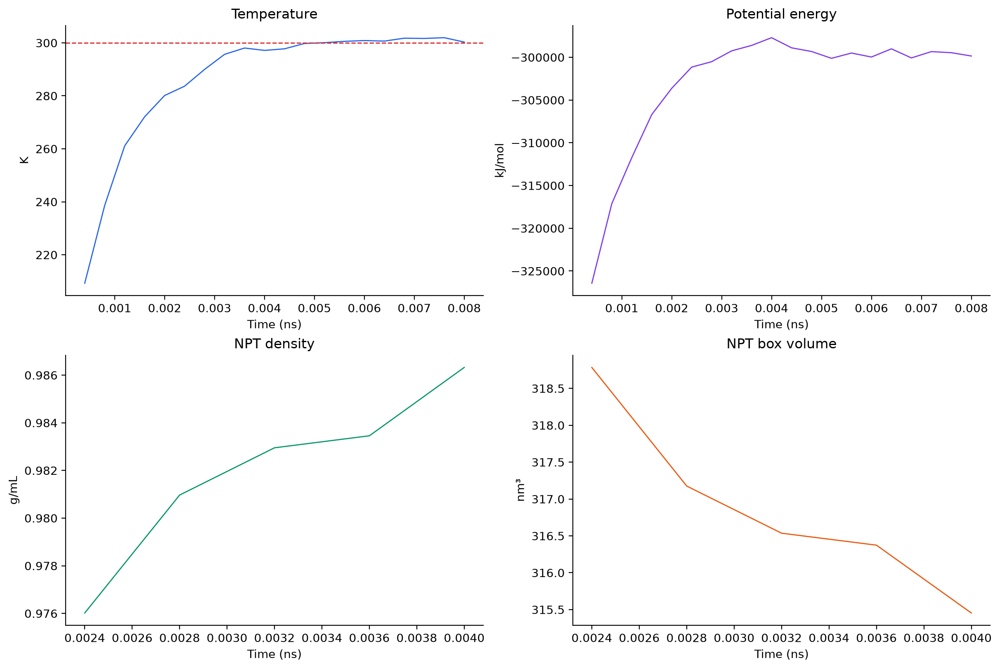
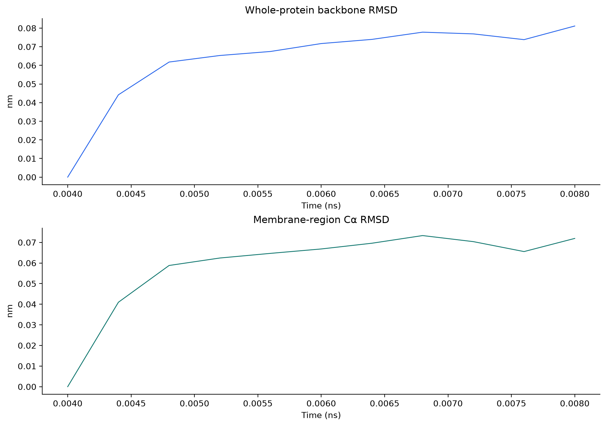
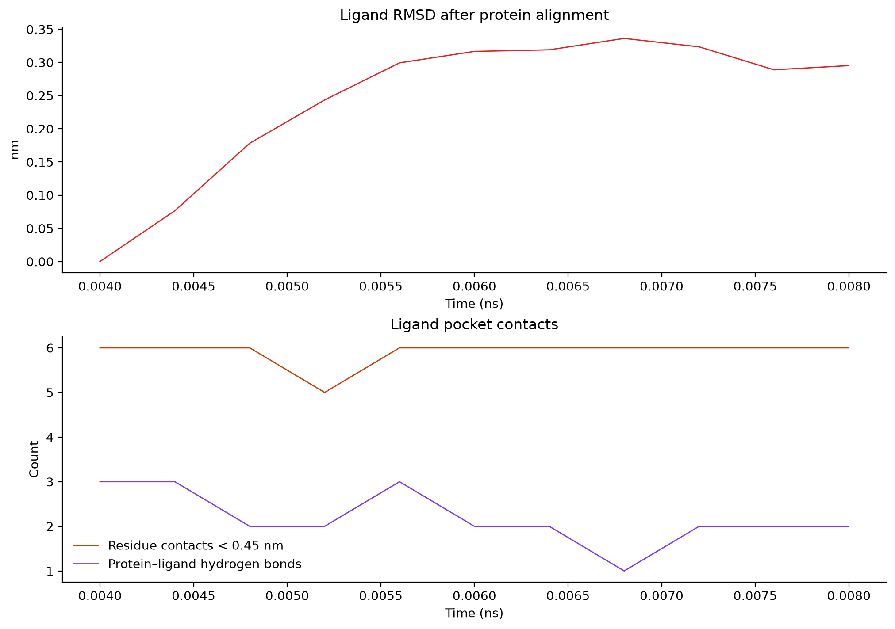
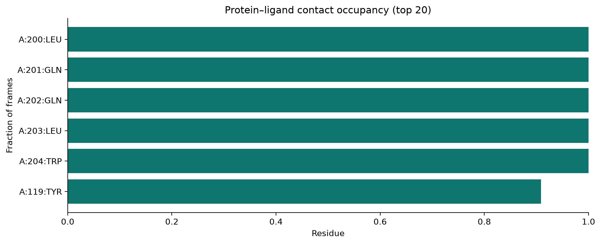
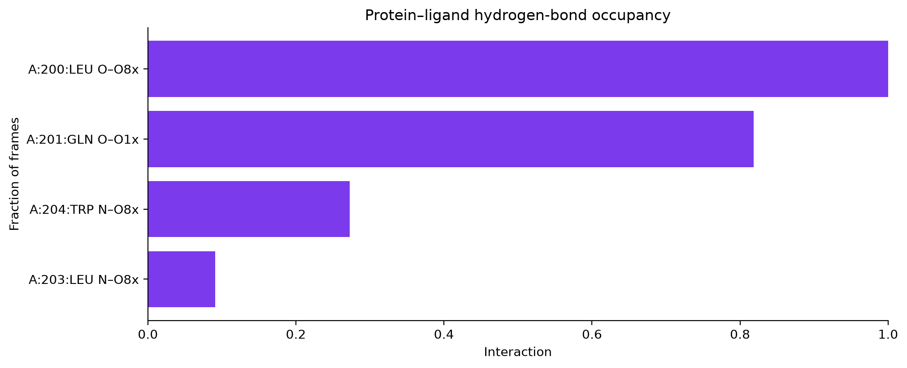
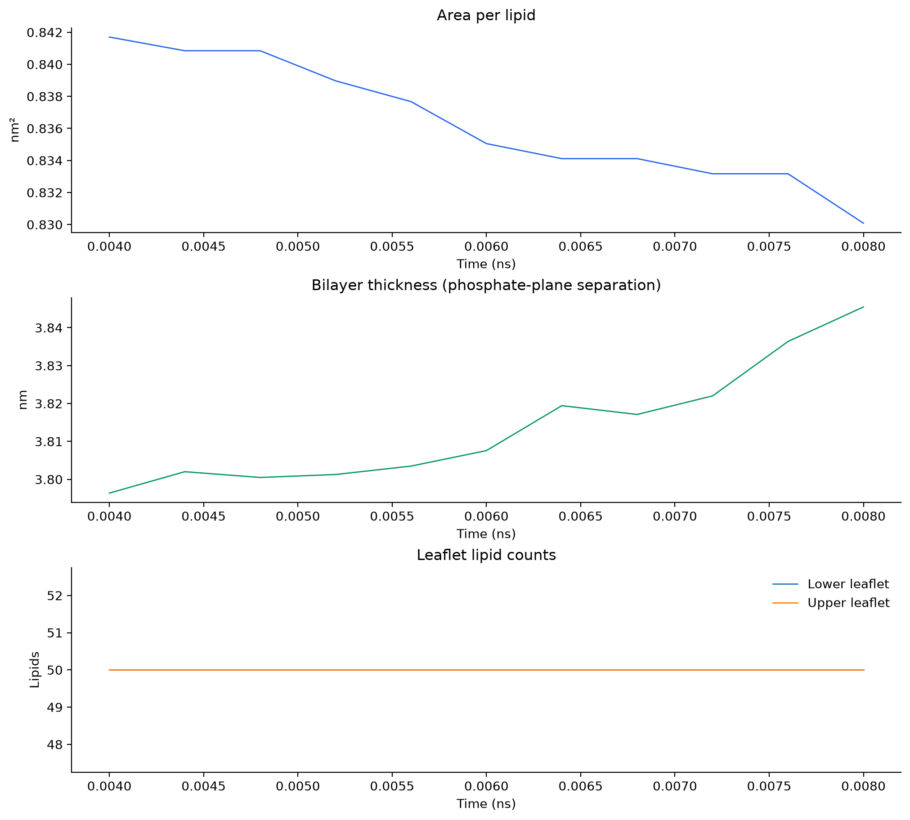
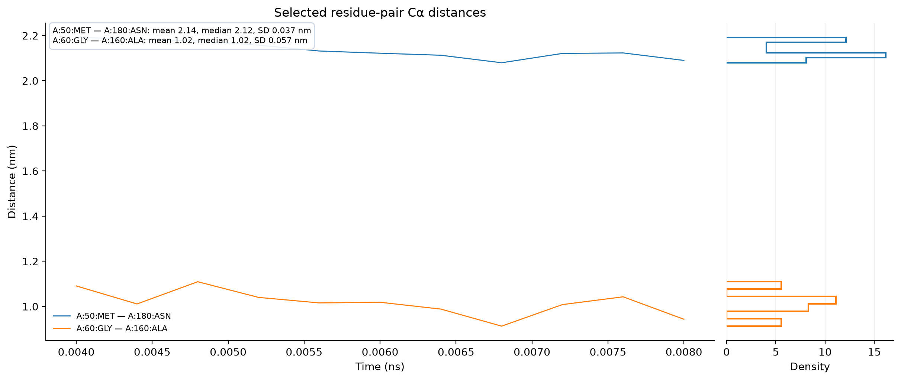
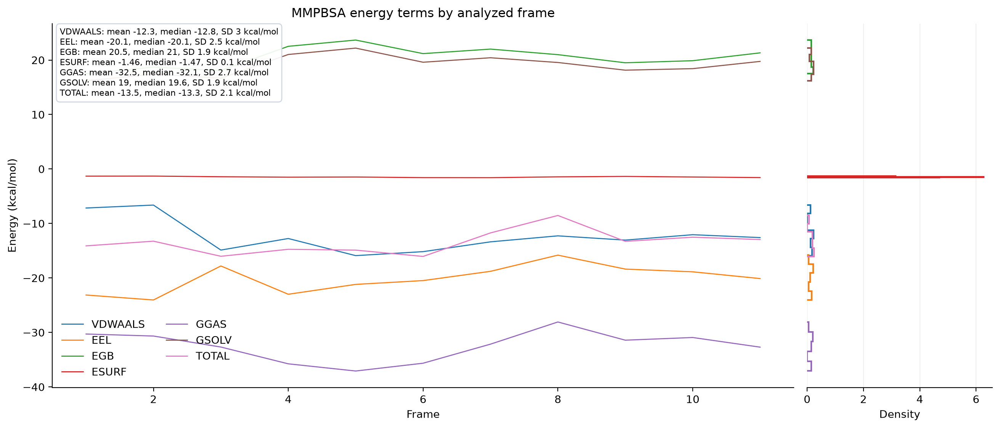
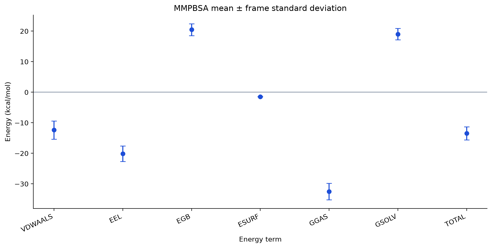

Protein–ligand MD analysis
Production frames analyzed: 11; state samples: 20.
- protein backbone rmsd nm mean: 0.063
- protein backbone rmsd nm std: 0.022
- ligand rmsd nm mean: 0.243
- protein rg nm mean: 1.687
- ligand rg nm mean: 0.370
- ligand contacts mean: 5.909
- protein ligand hbonds mean: 2.182
- membrane core rmsd nm mean: 0.059
- membrane core rmsd nm std: 0.020
- membrane thickness nm mean: 3.814
- membrane area per lipid nm2 mean: 0.836
Frame-to-frame spread is descriptive; frames are correlated and do not replace independent replicas.
Simulation Qc

Protein Stability

Ligand Pocket

Contact Occupancy

Hydrogen Bond Occupancy

Membrane Integrity

Residue Distances

Mmpbsa Energy Terms

Mmpbsa Energy Summary
